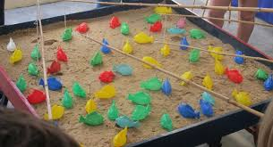
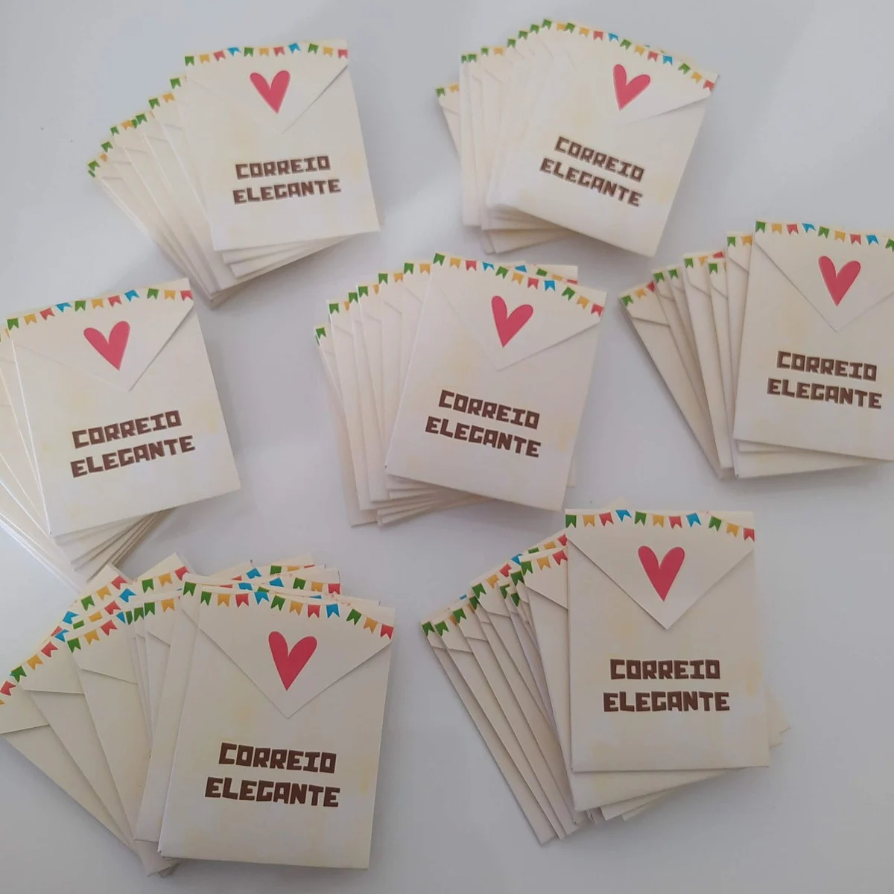
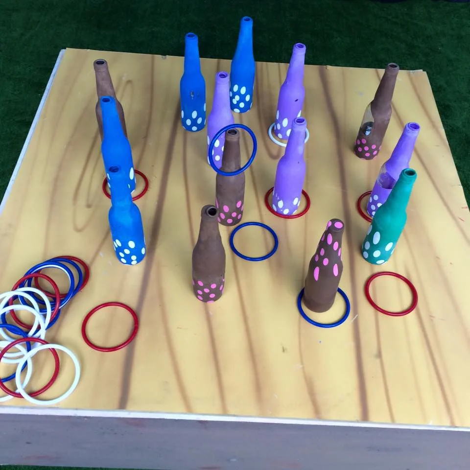

Brincadeiras Juninas
As brincadeiras fazem parte da diversão do São João e estão presentes em quermesses, escolas e festas de rua em todo o Brasil.

Pescaria

Correio Elegante

Argola

Corrida do Saco

Boca do Palhaço

Dança da Cadeira